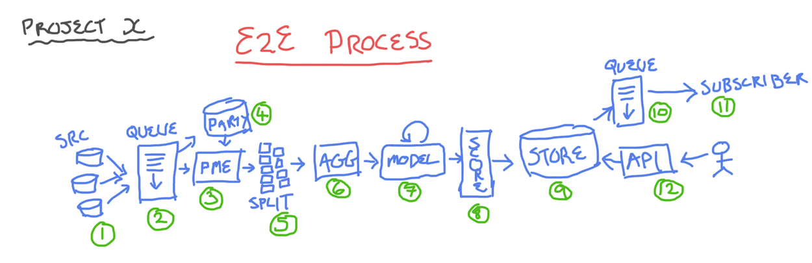
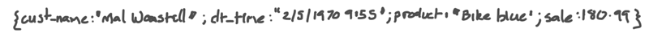
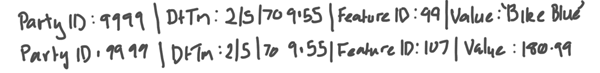
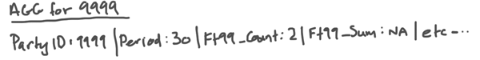

Project X - Research Page
Last Updated: 29/06/2015
System Diagram

Breakdown
- Source: Source data feeds - fed via connectors, ideally things like JSON data feeds. Feeds data in a raw format, one row per activity/event
- Inbound Queue: [Technology: Kafka] Queues the incoming data streams for processing. Used to ensure all data makes it through the system regardless of load. Pub/sub architecture. JSON Feeds are sent to queues.
- Party Matching Engine: [Technology: Storm? Spark Streaming?] Takes incoming raw data and uses identity fields to either match to a known party or create a new party record. If match is found it provides our surrogate key, if no match then new surrogate key generated.
- Party Repository: [Technology: Cassandra?] Stores all Parties with any Identifiable Information used for matching purposes. Security concern.
- Feature Splitter: [Technology: Storm / Spark Streaming]Takes Raw Data Event (now with surrogate Party Key) and splits it into Features, one Feature per row. Explained in detail later.
- Aggregation Engine: Aggregates all Feature results for a particulare Party for a given Period (inputs: Party, Feature, Period | output: Party Aggregate Row with all features)
- Model:
- Scorer:
- Score Store: Stores the latest Score record for each Party
- Outbound Queue: Queues any Party Score Store records that have been altered
- Subscriber Service: Listens for the Outbound Queue to receive a new Party Record
- Query API: Allows active querying of the Score Store
System Demo
System Demo will include the following components:
- Source: Simple single source of data, ideally some real Customer Activity records with identifiable information
- Feature Splitter:
- Aggregation Engine:
- Model:
- Scorer:
- Score Store:
Data Notes
The data will come in in a raw format, ideally some kind of a JSON feed. I'd expect something like this:

Given enough information we'd match the Party to a Party ID (in this case we match Mal Wanstall to our only record of Malcolm Wanstall with Customer ID 9999. THe features are then split post party match to look like this:

These features would then get aggregated with other features of the same Party ID and the same Feature ID for a given Aggregate Period and the various statistics would be produced resulting in an Agg Record:
